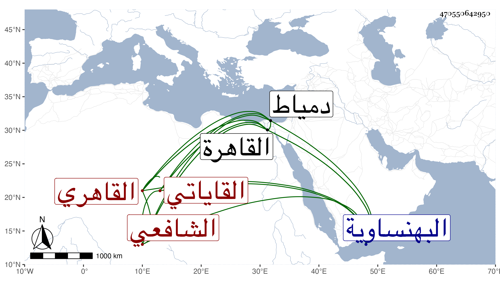

0902Sakhawi.DawLamic.ITO20230111-ara1.EIS1600.470550642950
Biography ID: 470550642950
556
محمد بن علي بن محمد بن يعقوب بن محمد الشمس أبو عبد الله بن النور القاياتي القاهري الشافعي ابن أخت الفخر القاياتي . ولد سنة خمس وثمانين وسبعمائة تقريبا بالقايات من أعمال البهنساوية وقرأ بعض القرآن ثم نقله أبوه إلى القاهرة عند عمه الناصري محمد فأكمله عنده وحفظ المنهاج وابن الحاجب الأصلي وألفية النحو وكذا التسهيل فيما قيل وعرض على جماعة وحضر دروس البلقيني وكذا درس الأبناسي وابن الملقن وأخذ الفقه والفرائض عن عمه ، وكان ماهرا في الفرائض والفرائض فقط عن الشمس الغراقي والتقي بن العز الحنبلي وكان متقدما فيها والشهاب العاملي والفقه عن الشمس القليوبي والبدر الطنبدي والنور الأدمي وعنهما أخذ أصول الفقه وعن أولهما أخذ النحو وكذا أخذ الأصول عن قنبر العجمي وأثنى على علمه سيما التصوف والقطب الأبرقوهي وعنهما أخذ المنطق ولازم الهمام العجمي في الأصلين والنحو والصرف وكان الهمام فائقا فيه وسمع عليه غالب ما أقرأه من الكشاف وهو الذي ألزمه فيما قيل بحفظ التسهيل وكذا أخذ العربية أيضا عن الشطنوفي ويقال إن جل انتفاعه فيها كان به وكذا أكثر من ملازمة العز بن جماعة فيما كان يقرئه من العلوم بحيث كان جل انتفاعه به والبساطي والعلاء البخاري حين قدومه القاهرة فسمع منه المنطق والجدل والأصلين والمعاني والبيان والبديع وغيرها من المعقولات والمنقولات ولم يفارقه حتى سافر وتقدم به كثيرا لدقة نظره وحدة فكره الذي لم يكن يقدم عليه فيهما غيره بل قال أنه إذا فكر في محل خال لا يلحقه لا القطب ولا التفتازاني ولا غيرهما ، ولما سافر مغضبا برز والأبناسي والونائي إلى دمياط حتى رجعوا به . وجود القرآن على بعض القراء وسمع اتفاقا على العز بن جماعة تساعيات جده الأربعين والجمال عبد الله الحنبلي ختم السيرة لابن هشام وغيره والشهاب الواسطي جزء البطاقة وغيره والولي العراقي الكثير ولازمه وأخذ عنه في شرح الألفية لوالده ووصفه بالشيخ الفاضل وكذا أخذ فيه عن شيخنا وسمع عليه كثيرا من كتب الحديث في رمضان وغيره بل ذكر أنه سمع البخاري على البلقيني وأنه سمع على أهل طبقته كالزين العراقي وابن الملقن ثم التقي الدجوي والبدر الطنبدي في آخرين ، وتلقن الذكر من إبراهيم الأدكاوي وغيره . ولم يزل يدأب حتى تقد في الفنون كلها وصار المعول عليه في جلها مع مزيد الفاقة والتقلل بحيث صار لذلك يتكسب بالشهادة في جامع الصالح وغيره إلى أن حصل له ولرفيقه الفيشي في تركة ابن مخلوف الزيات ألف دينار فيما قيل فأعرض حينئذ عن الشهادة وكذا تكسب بالزراعة أيضا ثم ارتقى فنزل طالبا بالمؤيدية ثم مدرس المحدثين بالبرقوقية بعد وفاة النور القمني ثم مدرس الشافعية بالأشرفية برسباي أول ما فتحت ثم شيخ سعيد السعداء برغبة الشهاب بن المحمرة ثم مدرس الغرابية بعد الشرف السبكي ودام إلى أن خطبه الظاهر جقمق لقضاء الشافعية بعد صرف شيخنا فباشره بعفة ونزاهة وتثبت في النواب بحيث أنه لم يأذن إلا لقليل منهم وقام بعمارة الأوقاف والنظر في مصالحها والصرف لمستحقيها ثم استقر به في تدريسي الفقه بالشيخونية والصلاحية المجاورة للشافعي مع النظر عليها بعد موت الونائي ثم انتزع له مشيخة البيبرسية ونظرها من شيخنا ولم يحمد العقلاء إجابته فيها ولا تعرضه لولده ونحوه مما بسطته في محاله مع أن ذلك لم يكن بمانع له عن الثناء عليه في إنبائه بعد موته ، وندم فيما بلغني على قبول الولاية وما جرت إليه وكاد أن يتزحزح عند السلطان فلم يلبث أن مات في المحرم سنة خمسين وصلي عليه في سبيل المؤمني في مشهد فيه السلطان والقضاة والعلماء والأعيان وخلق تقدمهم أمير المؤمنين ثم دفن بتربة سعيد السعداء وعظم الأسف على فقده ورثاه غير واحد كيحيى بن العطار وأولها :
| حقيق أنت بالذكر الجميل | لبعدك في زمانك عن مثيل |
| طلعت على البرية شمس علم | فلا عجب مصيرك للأفول |
وكان إماما عالما علامة غاية في التحقيق وجودة الفكر والتدقيق مزيحا للمشكلات بجلى عبارته ومريحا من التعب بواضح عباراته فكره الثاقب غاية في الاستقامة ونظره الصائب لو رام اعوجاجا لم يبلغه ميزان العلم مرامه بعد صيته وشاع ذكره وخشي فوته وصار شيخ الفنون بلا مدافعة ومن به تقر العيون بعد النظر والمطالعة لا يمترى في تحقيقه وصحة فكره ممترى ولا يتوقف في ذلك إلا حاسد أو مفترى تصدى للإقراء زمانا فانتفع به خلق وتزاحم الناس عليه من سائر أرباب الفنون والطوائف والمذاهب وانتشرت تلامذته وصاروا رؤساء في حياته وتحرى في الفتاوى فلذلك قلت وحدث باليسير . كل ذلك مع الدين والعقل والتواضع والتقشف والحلم والاحتمال والمحاسن الوافرة . وكتب على المنهاج قطعا متفرقة كثر اعتناؤه فيها بدفع كلام الأسنوي وعمل ذيلا ونكتا على المهمات وقد بسطت ترجمته في ذيل القضاة والمعجم والحوادث وهي إطالة في معلوم قال ابن قاضي شهبة : ولم تحمد سيرته يعني من قضائه لتتبع عثرات من قبله مع كونه أحد شيوخه والقائمين به ولذا مقت ، قال وكانت طريقته قبل القضاء أحسن لأنه كان متصديا للعلم ليلا ونهارا بحيث كان ذلك سببا لشهرته بالعلم وانتفاعه رحمه الله وإيانا . وقد أفحش يوسف بن تغري بردى مما أظن أن البقاعي كتبه له فإنه قال إنه تغير بعد يسير عن حاله الأول حيث لبس المسقول وكبر عمامته ومال إلى المنصب ميلا كثيرا واستناب النواب الكثيرة وراعى أهل الدولة وعمل بالرسالة من الأعيان وتشاهم في سلامه وتعاظم فنفرت قلوب بعض الناس منه لذلك لما كانوا يعهدونه من تملقه وبشابته وتقشفه أولا . وإنما ظننت كون هذا كلام البقاعي لأني رايت بخطه في ترجمته ما هو أقبح من هذا نسأل الله السلامة .
